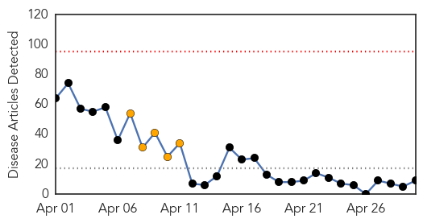
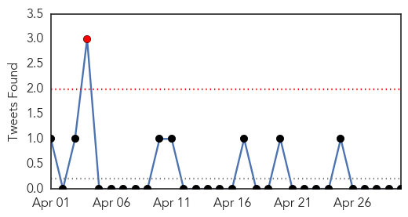
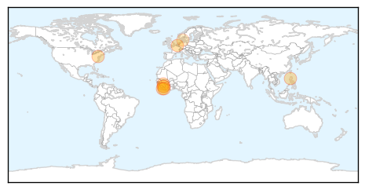

30 Day Trends
Web: 0 alerts, 5 warnings
Twitter: 1 alerts, 0 warnings
Top Articles:
- 1.000
- Ebola outbreak under control, says Guinea president
- 0.999
- Stay Away from Camel Milk and Egyptian Tomb Bats
- 0.999
- Ghana, Business Advice, Jobs, News, Business Directory, Real Estate, Finance, Forms, Auto
- 0.999
- West Africa Ebola crisis: awareness campaigns the key to halting outbreak
- 0.999
- Mob attacks Ebola treatment centre in Guinea, suspected cases reach Mali
- 0.998
- Malaysians in EVA countries told to remain vigilant - Nation
- 0.981
- In praise of CDC's heroic 'disease detectives'
- 0.683
- Liberia: Liberia: Ebola virus disease - Emergency Appeal n MDRLR001
- 0.669
- Liberia: Ebola virus disease - Emergency Appeal n° MDRLR001 - Liberia
Top Tweets:
-
No tweets found for Apr 30, 2014
Web/News Articles
Tweets
Article Locations
Article Confidences